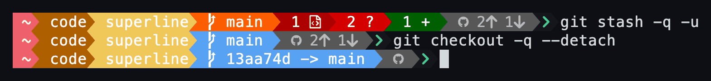

Git, at a glance
The branch, then modified, untracked and staged counts, then how far you are ahead of or behind the upstream. A detached HEAD shows its short hash and the branch it sits on.
Big working tree? The auto backend picks between git's own CLI (with its untracked cache and
fsmonitor) and in-process gitoxide based on the size of the index.

main.">